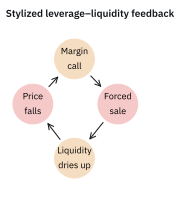
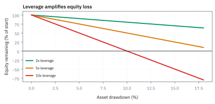
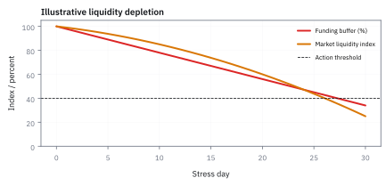
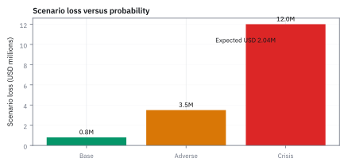

24.2 Bubbles, Crises, and Regulation
ความเปราะบางเกิดเมื่อราคาสูง leverage สูง และสภาพคล่องหายพร้อมกัน
ต่อหอคอยจากเงินตัวเอง 1 USD แล้ววางของที่ซื้อด้วยเงินกู้ 9 USD ข้างบน. ถ้าของทั้งหมดลดราคา 1 USD ฐานเหลืออะไร?
เฉลย: สินทรัพย์ 10 USD ลด 10% ทำให้เงินตัวเอง 1 USD เหลือศูนย์. การขยับเล็กของราคาจึงกลายเป็นเรื่องใหญ่เมื่อ leverage สูง.
leverage คือการใช้หนี้เพิ่มขนาดสินทรัพย์เทียบกับเงินตัวเอง. feedback loop เกิดเมื่อราคาลด บังคับขาย และการขายกดราคาต่อ. หอคอยไม่ได้ล้มเพราะฐานอ่อนแอทางอารมณ์; มันรับน้ำหนักเกินจริง.
ศัพท์วิกฤตที่ต้องนิยามก่อนคำนวณ
- bubble
- ช่วงที่ราคาตลาดสูงกว่ามูลค่าที่อธิบายได้ด้วย cash flow และ risk premium ภายใต้สมมติฐานหนึ่ง ใช้เป็นคำถามเชิงแบบจำลอง ไม่ใช่ตราประทับที่รู้แน่ได้แบบ real time
- leverage
- การใช้หนี้หรือ derivative contract เพื่อให้ notional exposure ใหญ่กว่า equity capital ใช้ขยายทั้งผลตอบแทนและขาดทุนต่อเงินทุน
- margin
- เงินสดหรือหลักทรัพย์ค้ำประกันที่ broker หรือลูกหนี้เรียกเพื่อรองรับ exposure ใช้เป็น buffer และ trigger ให้ลด position เมื่อ collateral ไม่พอ
- liquidity
- ความสามารถซื้อหรือขายขนาดที่ต้องการโดยราคาไม่เคลื่อนมากและทำได้เร็ว ใช้ประเมินว่าการ mark-to-market สะท้อนราคาขายจริงได้แค่ไหน
- fire sale
- การขายสินทรัพย์อย่างเร่งด่วนเพื่อหา cash จนราคาต่ำกว่ามูลค่าในภาวะปกติ ใช้อธิบาย feedback จาก forced deleveraging
- systemic risk
- ความเสี่ยงที่การผิดนัดหรือการขายของสถาบันหนึ่งส่งผ่านจนกระทบระบบการเงินวงกว้าง ใช้กำหนด stress test และ capital buffer
- mark-to-market
- การตีมูลค่า position ด้วยราคาตลาดปัจจุบันเพื่อคำนวณ P&L และ collateral ใช้ทำให้ loss ปรากฏเร็ว แต่เปราะบางเมื่อ market price ไม่มี liquidity
- stress test
- การจำลอง scenario รุนแรงที่กำหนดไว้ล่วงหน้าเพื่อดู capital, liquidity และ margin call ใช้ค้นหาจุดที่ model ปกติไม่ครอบคลุม
- capital requirement
- กฎที่บังคับให้สถาบันถือ equity หรือสินทรัพย์สภาพคล่องตามความเสี่ยง ใช้จำกัดการขยาย balance sheet และลดโอกาสล้มแบบ domino
- Dodd–Frank Act
- กฎหมายปฏิรูปการเงินของสหรัฐฯ หลังวิกฤต 2008 ที่เพิ่มการกำกับ derivatives, clearing, reporting และ resolution ใช้เป็นบริบทของ regulatory control ไม่ใช่สูตรราคา
- Basel capital framework
- กรอบมาตรฐานสากลที่เพิ่มคุณภาพและ buffer ของ bank capital รวมถึง liquidity metrics ใช้เป็น benchmark สำหรับ risk governance ของธนาคาร
ศัพท์เสริมเรื่อง clearing
- central counterparty (CCP)
- สถาบันกลางที่ยืนอยู่ระหว่างคู่สัญญาและเรียก margin เพื่อจัดการ counterparty exposure ใช้ลด bilateral settlement risk
สัญลักษณ์และหน่วย
| สัญลักษณ์ | ความหมาย | หน่วย |
|---|---|---|
| $E$ | equity capital ของผู้ถือ position | USD |
| $A$ | มูลค่าสินทรัพย์หรือ notional exposure | USD |
| $L$ | หนี้สินที่ใช้จัดหา $A$ | USD |
| $\ell$ | leverage ratio $A/E$ | multiple |
| $m$ | margin requirement ต่อ exposure | fraction |
| $P_t$ | ราคาตลาด ณ เวลา $t$ | USD/unit |
| $\Delta P$ | การเปลี่ยนราคาสำหรับ stress scenario | USD/unit |
| $\mathrm{PD}$ | probability of default (PD) ใน horizon ที่กำหนด | fraction per horizon |
| $\mathrm{LGD}$ | loss-given-default (LGD) fraction | fraction |
| $\mathrm{EAD}$ | exposure at default (EAD) | USD |
| $\mathrm{EL}$ | expected loss (EL) | USD |
| $Z$ | standard normal random variable | dimensionless |
| $D$ | default indicator random variable | binary {0, 1} |
ที่มาที่ไป: รูปแบบที่ซ้ำมาสี่ร้อยปี
ฟองสบู่ไม่ใช่เรื่องใหม่ และไม่ได้เกิดจากความโง่ของคนยุคใดยุคหนึ่ง
ตั้งแต่ราคาหัวทิวลิปในเนเธอร์แลนด์ในศตวรรษที่สิบเจ็ด บริษัทการค้าในลอนดอนในปี 1720 ตลาดหุ้นในปี 1929 หุ้นเทคโนโลยีในปี 2000 จนถึงอสังหาริมทรัพย์ในปี 2008 รายละเอียดต่างกันทุกครั้ง แต่โครงสร้างคล้ายกันอย่างน่าตกใจ
องค์ประกอบที่ปรากฏซ้ำมีไม่กี่อย่าง คือเรื่องเล่าที่น่าเชื่อว่าครั้งนี้ต่างจากเดิม การใช้เงินกู้ที่เพิ่มขึ้นเงียบ ๆ และคนที่เตือนถูกมองว่าไม่เข้าใจ
หัวข้อนี้ไม่ได้สอนวิธีจับจังหวะฟองสบู่ ซึ่งเป็นสิ่งที่ทำไม่ได้จริง แต่สอนให้รู้จักองค์ประกอบเหล่านั้น เพื่อจะได้เตรียมรับมือแทนการพยากรณ์
bubble ไม่ใช่แค่ราคาขึ้นเร็ว
ราคาหุ้น United States (US) โตได้เพราะ expected cash flow, discount rate หรือ risk premium เปลี่ยนอย่างสมเหตุสมผล ดังนั้นต้องเทียบราคากับ cash-flow model และดู financing behaviour ประกอบ สัญญาณเตือนคือราคาขึ้นพร้อม leverage สูง, underwriting มาตรฐานตก, maturity สั้น, collateral ถูก mark ด้วยราคาที่สูงขึ้นเอง
และผู้เล่นพึ่งพาการขายต่อทันที เมื่อราคาเป็นหลักประกันของหนี้และหนี้เป็นเชื้อเพลิงให้ซื้อราคาเดิม ระบบจะมี endogeneity: ราคาสูงสร้าง capacity กู้ และ capacity กู้สร้างแรงซื้อ จุดแตกหักมาถึงเมื่อผู้เล่นที่ต้องจ่าย cash ไม่สามารถขายในราคาที่เคยใช้ค้ำหนี้ได้
ขั้นที่ 1 — leverage ขยายผลตอบแทนต่อ equity
อัตราทดขยายผลตอบแทนต่อเงินตัวเอง เจ็ดบรรทัดนี้แสดงว่าตัวคูณที่ขยายกำไร เป็นตัวเดียวกับที่ขยายขาดทุน ไม่มีทางเลือกเอาเฉพาะด้านดี และพจน์ที่สองคือเหตุผลที่จุดคุ้มทุนขยับสูงขึ้นเมื่อกู้มากขึ้น
สินทรัพย์มาจากเงินตัวเองบวกเงินกู้ และอัตราทดคือสัดส่วนของสองอย่าง กำไรเป็นเงินคือสินทรัพย์ทั้งก้อนสร้างผลตอบแทน แล้วหักดอกเบี้ยที่ต้องจ่ายเจ้าหนี้
ส่วนด้วยเงินตัวเองเพื่อให้เป็นผลตอบแทนของเจ้าของ แล้วแยกเศษเป็นสองก้อน จากนั้นเขียนสัดส่วนหนี้ต่อทุนในภาษาของอัตราทด ซึ่งมาจากบรรทัดแรกโดยตรง
แทนกลับแล้วอ่านผล ผลตอบแทนของเจ้าของคือผลตอบแทนสินทรัพย์คูณอัตราทด ลบต้นทุนเงินกู้คูณส่วนที่กู้มา
แทนเลขจริง สินทรัพย์ทำได้ 5% แต่เจ้าของได้ 14% ฟังดูดีจนกว่าจะลองอีกทาง ถ้าสินทรัพย์ทำได้ลบ 5% เจ้าของขาดทุน 26% ตัวคูณเดียวกันทำงานทั้งสองทิศ และคนมักลืมทิศที่สอง
ขั้นที่ 2 — หาจุดตัดผลตอบแทนที่กระตุ้น margin call
การคำนวณจุดตัดของ margin call เผยให้เห็นกลไกที่อันตรายที่สุดของ leverage: อัตราส่วนทุนรูดลงเร็วกว่าราคาเสมอ
เมื่อมีหนี้คงที่ ขาดทุนของสินทรัพย์ทั้งหมดจะตกเป็นของ equity โดยตรง การลดลงของมูลค่าเพียงเล็กน้อยจึงกระตุ้น margin call เร็วกว่าที่สัญชาตญาณคาดการณ์ไว้มาก
หากผู้ลงทุนกู้ยืม $90\%$ (leverage สิบเท่า) และ lender กำหนด maintenance margin ที่ $5\%$ การที่สินทรัพย์ลดลงเพียง $5.26\%$ ก็เพียงพอที่จะบีบให้ต้องหาเงินสดมาเติมทันที
จุดที่คนมักเข้าใจผิดคือ คิดว่าเมื่อเริ่มต้นด้วยทุน $10\%$ และเกณฑ์เตือนอยู่ที่ $5\%$ ราคาจะต้องร่วงถึง $5\%$ เต็มจึงจะถูกเรียกหลักประกัน
แต่เมื่อราคาสินทรัพย์ลดลง ทุนที่เป็นเศษลดลงเต็มจำนวน ขณะที่สินทรัพย์ที่เป็นส่วนลดลงตามสัดส่วน ทำให้อัตราส่วนทุนต่อสินทรัพย์รูดลงเร็วกว่าการตกของราคาเสมอ
จัดรูปอสมการโดยคูณส่วนขึ้นไป แล้วย้ายพจน์ที่มีผลตอบแทนมารวมกัน จะได้สูตรตัดขาดทุนวิกฤตที่ขึ้นกับทุนเริ่มต้นและเกณฑ์บังคับ
แทนตัวเลขจริง ทุนเริ่มต้นหนึ่งในสิบและเกณฑ์ $5\%$ ราคาสินทรัพย์ขยับลงเพียง $5.26\%$ ก็ทำให้ส่วนของเจ้าของตกไปแตะเกณฑ์เตือนแล้ว
แล้วเอาไปใช้ทำอะไรได้จริงบ้าง
การเข้าใจรูปแบบของฟองสบู่และวิกฤติ ช่วยให้รู้ว่าตอนนี้อยู่ตรงไหนของวัฏจักร
ใช้จดจำสัญญาณที่เกิดซ้ำ เช่นการใช้เงินกู้เพิ่มขึ้น และการอ้างว่าครั้งนี้ต่างจากเดิม
ใช้เข้าใจว่ากฎเกณฑ์ที่ออกมาหลังแต่ละวิกฤติ ตอบสนองต่ออะไร และสร้างผลข้างเคียงอะไร
ใช้ออกแบบการควบคุมความเสี่ยงที่ทนต่อภาวะที่สภาพคล่องหายไปพร้อมกันทั้งตลาด
ภาพที่ 24.2a — leverage/liquidity spiral แบบวงจร

วงจรเชิงสอนคือราคาและ collateral ลด ทำให้ margin call เพิ่ม การขาย forced sale ทำให้ liquidity แย่และราคาลดต่อ; กล่องสีแดงเป็น risk control points ที่ desk ต้อง monitor
จาก price risk ไปสู่ funding risk
ในวิกฤต desk อาจถูกต้องว่าหลักทรัพย์จะฟื้นใน 30 วัน แต่ถ้า repo lender เรียก cash วันนี้ desk ต้องขายก่อน thesis จะทำงาน Funding liquidity จึงเป็น risk ของ path ไม่ใช่แค่ terminal price. ควรแยก market liquidity ซึ่งวัด spread และ depth ออกจาก funding liquidity ซึ่งวัด cash source, haircut และ maturity. Haircut คือส่วนลดที่ lender หักจากมูลค่าหลักทรัพย์ก่อนให้กู้; haircut กว้างขึ้นทำให้ต้องใช้ equity มากขึ้นทันที long horizon ช่วยได้ก็ต่อเมื่อ portfolio มี cash พอจะเดินทางไปถึง horizon นั้น
ขั้นที่ 3 — haircut เปลี่ยนเงินทุนที่ต้องใช้
ส่วนลดที่ผู้ให้กู้กันไว้ กำหนดอัตราทดสูงสุดโดยตรง ห้าบรรทัดนี้แสดงความสัมพันธ์ที่เรียบง่ายจนน่าตกใจ คืออัตราทดคือส่วนกลับของส่วนลด และเป็นเครื่องยนต์ของวงจรที่หัวข้อ 22.5 อธิบายไว้
$h$ คือส่วนลดที่ผู้ให้กู้กันไว้ ปล่อยกู้ได้ไม่เต็มมูลค่าหลักประกัน เงินตัวเองที่ต้องใส่จึงคือส่วนที่กู้ไม่ได้พอดี กระจายวงเล็บแล้วจะเห็นว่ามันเท่ากับมูลค่าคูณส่วนลดตรง ๆ
แทนลงในนิยามอัตราทดของขั้นที่ 1 มูลค่าสินทรัพย์ตัดกันหมด เหลือแค่ส่วนกลับของส่วนลด ซึ่งเป็นผลที่สะอาดผิดคาด
แทนเลขจริง ส่วนลดหนึ่งในสี่ให้อัตราทดสี่เท่า และถ้าผู้ให้กู้ขึ้นส่วนลดเป็นสี่ในสิบ อัตราทดที่ทำได้ร่วงเหลือ 2.5 เท่า
อ่านผลในทางปฏิบัติ ผู้ให้กู้ควบคุมอัตราทดสูงสุดของทั้งตลาดได้ด้วยตัวเลขตัวเดียว และเมื่อเขาขึ้นมันพร้อมกันตอนตลาดแย่ ทุกคนถูกบังคับให้ลดขนาดพร้อมกัน
แยกเงินเติมจากเงินขายลดหนี้
สูตรการขายลดหนี้อธิบายว่าทำไมวิกฤติสภาพคล่องจึงลุกลามเร็วนัก การชำระหนี้ด้วยการขายสินทรัพย์ไม่ได้เพิ่มเงินทุน แต่เป็นการลดขนาด balance sheet
ตัวคูณ $1/m$ หมายความว่าหากเกณฑ์ margin คือ $5\%$ การขาดเงินหลักประกันเพียงหนึ่งส่วน จะบังคับให้เทขายสินทรัพย์ออกมาถึงยี่สิบส่วนในตลาด
เมื่อสถาบันหลายแห่งต้องแก้ปัญหาเดียวกันพร้อมกัน การเทขายขนาดมหาศาลจะทุบราคาตลาดให้ดิ่งลงไปอีก เกิดเป็น feedback loop ที่กดดันสภาพคล่องทั้งระบบ
เมื่อเกิด margin shortfall จำนวน 260,000 USD ทางเลือกแรกคือหาเงินสดใหม่มาคืนหนี้ ซึ่งจะทำให้ส่วนของเจ้าของกลับขึ้นไปแตะเกณฑ์ $5\%$ พอดี
แต่ถ้าไม่มีเงินสดใหม่เหลืออยู่ ทางเลือกเดียวคือขายสินทรัพย์ทิ้งจำนวน $x$ เพื่อนำเงินสดไปชำระหนี้
การขายสินทรัพย์เพื่อตัดหนี้ไม่ได้ช่วยเพิ่ม equity เพราะเงินที่ได้นำไปชำระหนี้ทั้งหมด แต่ช่วยลดขนาดสินทรัพย์ที่เป็นตัวหารลง
เนื่องจากเกณฑ์ margin คือ $5\%$ หรือหนึ่งในยี่สิบ การชดเชย shortfall ทุกหนึ่งดอลลาร์จึงต้องเทขายสินทรัพย์ออกมายี่สิบดอลลาร์
ผลขาดทุนเพียง $260{,}000$ USD จึงบีบให้กองทุนต้องขายสินทรัพย์ถึง $5.2$ ล้าน USD หรือเกินครึ่งพอร์ต นี่คือกลไกของ fire sale ในตลาดจริง
worked example — mortgage pool shock แบบตรวจได้
ของที่มี: mortgage pool มูลค่า 10,000,000 USD ใช้เงินทุนของตัวเอง (equity) 1,000,000 USD และกู้มา 9,000,000 USD จากนั้นราคาสินทรัพย์ร่วง 8% โดยเจ้าหนี้กำหนด maintenance margin ไว้ที่ 5%
ถามว่า equity เหลือเท่าไร และ margin call ขาดเงินเท่าไร?
คำตอบ: asset เหลือ 9,200,000 USD, equity เหลือ 200,000 USD และขาด margin 260,000 USD.
ตรวจเองใน 10 วินาที: 9,200,000-9,000,000=200,000 และ 5% ของ 9,200,000 คือ 460,000.
เอาไปใช้จริง: risk team stress ทั้งราคาและ funding requirement เพื่อเห็น forced-sale risk ก่อนมันเริ่ม feedback loop.
maintenance margin 5% ในโจทย์นี้เป็นเงื่อนไข funding สมมติของ pool ไม่ใช่อัตราขั้นต่ำตามกฎบัญชีซื้อหุ้นทั่วไป
ภาพที่ 24.2b — equity sensitivity ต่อ asset drawdown

เส้นแต่ละสีเป็น leverage เริ่มต้น 2, 5 และ 10 เท่า โดยถือหนี้คงที่ใน scenario; จุดที่เส้นแตะศูนย์คือ equity ถูกล้าง ไม่ใช่ default probability ที่ calibrated จริง
ทำไม regulation หลัง 2008 เน้น buffer และ transparency
บทเรียนเชิงระบบคือทำให้การล้มของผู้เล่นหนึ่งไม่บังคับทุกคนขายพร้อมกัน Regulation จึงใช้ capital requirement ดู loss-absorbing equity, liquidity requirement ดู cash horizon, central clearing และ margin ลด counterparty uncertainty, trade reporting ช่วยเห็น concentration, stress testing ตรวจ feedback และ resolution planning ลด bailout expectation.
Dodd–Frank Act และ Basel capital framework เป็นกรอบสำคัญ แต่ implementation ต้องตรวจ mapping จาก rule ไปยัง limit, data lineage, escalation และ evidence ของการทดสอบ การควบคุมที่ดีไม่ถามแค่ว่า ‘model บอก loss เท่าไร’ แต่ถามว่า ‘ถ้า loss เกิน model ใครมีอำนาจหยุดและมี cash กี่วัน’
ขั้นที่ 4 — นิยามของสองตัวเลข ที่ตอบคนละคำถาม
Expected loss คือค่าเฉลี่ยทางสถิติในวันฟ้าโปร่ง เป็นต้นทุนที่คาดการณ์ได้และตั้งสำรองล่วงหน้าได้ในงบการเงิน
แต่การรอดชีวิตในวิกฤติไม่ได้ขึ้นกับค่าเฉลี่ย ในยามที่เศรษฐกิจตกต่ำ โอกาสผิดนัดและความรุนแรงของความเสียหายจะพุ่งขึ้นพร้อมกัน
Stress loss จึงไม่ได้ทดสอบว่าโดยเฉลี่ยเสียเท่าไร แต่ทดสอบว่า balance sheet จะพังทลายหรือไม่เมื่อเผชิญกับสถานการณ์เลวร้ายที่สุดในระบบ
การสร้าง expected loss เริ่มจากนิยามของผลขาดทุนที่เป็น random variable $L$ ซึ่งขึ้นกับ indicator ของการผิดนัดชำระหนี้ $D$
เมื่อหา expected value ภายใต้สมมติฐานว่าการ default และความเสียหายมี independence ต่อกัน ก้อนผลคูณจะแยกตัวประกอบออกมาเป็นสามส่วน
แทนค่าในสภาวะปกติ โอกาสผิดนัด $2\%$ และเสียหาย $40\%$ จากยอดหนี้ 10 ล้าน USD คาดว่าจะขาดทุนเพียง 80,000 USD ซึ่งสถาบันกันสำรองเป็นต้นทุนปกติ
แต่ในวิกฤติ การผิดนัดพุ่งขึ้นพร้อมกับมูลค่าหลักประกันที่ทรุดลง scenario ที่เลวร้ายที่สุดดึงให้ผลขาดทุนกระโดดขึ้นไปเป็น 1,050,000 USD สูงกว่าค่าเฉลี่ยกว่าสิบสามเท่า
ภาพที่ 24.2c — funding liquidity กับ market liquidity ใน stress

แกนนอนคือวันของ stress; funding cash ลดจาก margin call ขณะที่ market liquidity ลดผ่าน bid–ask depth. จุดตัดคือช่วงที่ต้องขายเร็วทั้งที่ราคาขายแย่ จึงควรมี early warning
ที่มาที่ไป: ปรากฏการณ์ 25-Sigma และบทเรียนจากวิกฤติ Quant Meltdown 2007
ในเดือนสิงหาคมปี 2007 กองทุน quantitative equity ทั่วโลกเผชิญการขาดทุนอย่างรวดเร็วและรุนแรงพร้อมกันอย่างไม่เคยปรากฏมาก่อน
David Viniar ผู้บริหารสายการเงินของ Goldman Sachs ในขณะนั้น ได้กล่าวประโยคที่เป็นตำนานว่า บริษัทได้เห็นเหตุการณ์ที่เคลื่อนไหวรุนแรงระดับ 25 standard deviations ติดต่อกันหลายวัน
คำถามแบบ Feynman ที่ต้องถามทันทีคือ ตัวเลข 25 standard deviations มีความหมายทางสถิติจริงอย่างไร และเหตุการณ์เช่นนี้มีโอกาสเกิดขึ้นจริงในโลกความน่าจะเป็นหรือไม่ หรือเป็นเพราะ model ที่ใช้ตั้งสมมติฐานผิดพลาดตั้งแต่แรก
ในโลกของ Gaussian distribution โอกาสเกิด 25-sigma มีค่าน้อยจนแทบไม่มีทางเกิดขึ้นแม้แต่ครั้งเดียวตลอดอายุของเอกภพ การที่มันเกิดขึ้นจริงหลายวันติดต่อกันไม่ได้แปลว่าเกิดปาฏิหาริย์ แต่เป็นข้อพิสูจน์ว่าสมมติฐานเรื่อง independence และ distribution แบบปกติพังทลายลงอย่างสิ้นเชิงเมื่อเกิด liquidity feedback loop
ขั้นที่ 5 — การพังทลายของ Gaussian model: คำนวณความน่าจะเป็นของ 25-Sigma
การคำนวณหางของ Gaussian distribution ชี้ให้เห็นความลวงตาของการวัดความเสี่ยงด้วย standard deviation เพียงอย่างเดียวในตลาดจริง
เมื่อกองทุนจำนวนมากใช้ factor model คล้ายกัน เมื่อกองทุนแรกถูกเรียก margin call และต้องขายสินทรัพย์ ราคาของ factor นั้นจะร่วงลงทันที
แรงขายนี้บีบให้กองทุนอื่นต้องขายตาม เกิดเป็น endogenous correlation ข้ามสินทรัพย์ที่ทำให้เกิดการร่วงลงรุนแรงพร้อมกัน
วิกฤติ 2007 และ 2008 จึงไม่ได้เกิดจากความน่าจะเป็นระดับ $10^{-138}$ แต่เกิดจากการที่สมมติฐานทางสถิติของ model ละเลยผลกระทบของ liquidity และการกู้ยืมหนี้สิน
เริ่มจากขอบเขตบนของหาง Gaussian distribution ซึ่งหาได้จากการ integrate ทีละส่วนของ density function
เมื่อแทน $z = 25$ กำลังสองของ 25 ส่วนด้วยสองให้ค่าสูงถึง $312.5$ ในเลขชี้กำลังติดลบ
แปลงเป็น logarithm ฐานสิบ จะได้ว่าความน่าจะเป็นมีค่าประมาณ $10^{-138}$ ซึ่งหมายถึงเลขศูนย์หลังจุดทศนิยม 137 ตัว
ตลอดอายุของจักรวาลที่มีการซื้อขายระดับ microsecond มีเหตุการณ์เกิดขึ้นเพียง $10^{24}$ ครั้ง ตัวเลข $10^{-138}$ จึงไม่มีทางเกิดขึ้นจริงแม้แต่ครั้งเดียว
ถ้าสมมติว่าแต่ละวันเป็น independence ต่อกัน โอกาสเกิดสองวันติดกันคือ $10^{-276}$ นี่คือหลักฐานว่าความเสี่ยงในวิกฤติไม่ได้มาจาก shock สุ่มตามธรรมชาติ แต่มาจากการแห่ขายสินทรัพย์ชนิดเดียวกันจนพังทั้งระบบ
กับดัก: regulation ลดความเสี่ยง ไม่ได้ลบความเสี่ยง
Capital rule อาจทำให้ risk ย้ายไป broker, hedge fund หรือ private credit; central clearing ลด bilateral exposure แต่เพิ่มความสำคัญของ central counterparty (CCP) margin และ liquidity; stress test ที่ใช้ historical correlation อาจพลาด correlation jump; mark-to-market ที่ใช้ last trade อาจไม่ใช่ exit price ใน fire sale.
จึงต้องมี model risk inventory, independent validation, reverse stress test, intraday liquidity dashboard และ governance ที่ท้าทายสมมติฐาน สะพานไป 24.3 คือ regulation ทำงานผ่าน exchange, broker, dealer, exchange-traded fund (ETF) issuer, underwriter, rating agency และ securities lender จึงต้องรู้ว่าแต่ละคนถือความเสี่ยงและส่งคำสั่งต่อกันอย่างไร
ข้อจำกัด: วิธีนี้สมมติอะไร และของจริงเป็นอย่างไร
| เรื่อง | วิธีนี้สมมติว่า | ของจริงเป็นอย่างไร | ผลที่ตามมาเวลาใช้งาน |
|---|---|---|---|
| การจดจำรูปแบบ | รู้รูปแบบแล้วเห็นฟองสบู่ได้ | ระบุได้ชัดเจนหลังจากมันแตกแล้วเท่านั้น | การพยายามจับจังหวะฟองสบู่ทำให้ขาดทุนได้นานมากก่อนจะถูก |
| ประวัติศาสตร์ซ้ำรอย | วิกฤติหน้าจะคล้ายครั้งก่อน | รายละเอียดต่างกันเสมอ | การป้องกันเฉพาะรูปแบบเดิมทำให้ถูกจู่โจมจากทางใหม่ |
| กฎเกณฑ์ | กฎทำให้ระบบปลอดภัยขึ้น | กฎเปลี่ยนแรงจูงใจและย้ายความเสี่ยง | ความเสี่ยงมักย้ายไปอยู่ในส่วนที่กำกับน้อยกว่า แทนที่จะหายไป |
แถวแรกเป็นเหตุผลที่การบริหารความเสี่ยงเน้นการเตรียมรับมือ มากกว่าการพยากรณ์
ภาพที่ 24.2d — stress loss distribution แบบ deterministic

distribution นี้เป็น scenario table ที่กำหนดน้ำหนักไว้ล่วงหน้า: base, adverse และ crisis; weighted expected loss กับ crisis loss ต่างกันจึงต้องรายงานคู่กันในการอนุมัติ limit
สรุปที่ใช้ได้จริง
- bubble ต้องวิเคราะห์ cash flow, discount rate และ financing feedback ร่วมกัน ไม่ใช่ตัดสินจากราคาขึ้นเร็วอย่างเดียว
- leverage คูณ asset return ไปยัง equity และทำให้ margin call เกิดก่อน thesis ระยะยาวจะทำงาน
- market liquidity กับ funding liquidity เป็นคนละ risk; haircut และ maturity ทำให้ path ของการรอดสำคัญกว่าราคา terminal
- regulation หลัง 2008 ใช้ capital, liquidity, clearing, reporting และ stress testing เป็น defense in depth
- expected loss ไม่แทน stress loss; ต้องมี reverse stress, model-risk governance และ trigger ที่คนมีอำนาจลงมือได้
- สะพานถัดไปคือโครงสร้างสถาบันที่ส่งผ่าน order, borrow และ risk ระหว่าง exchange, broker, ETF และ lender